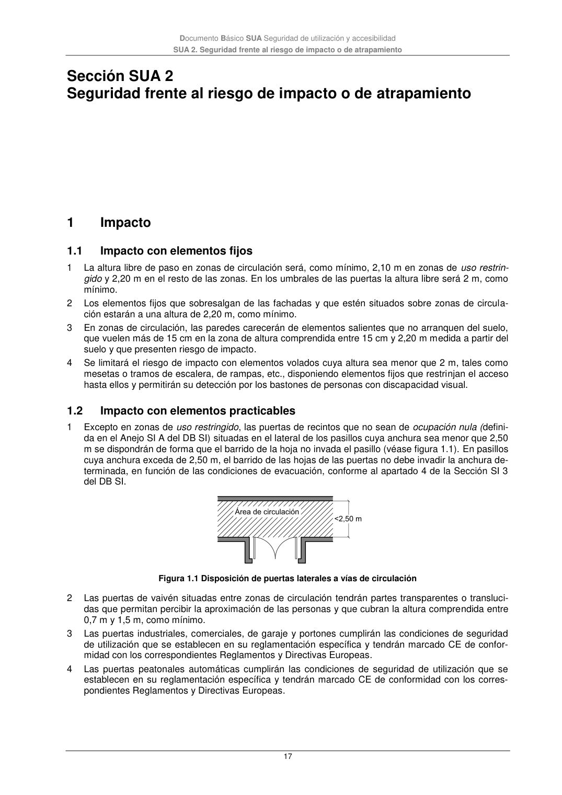

DB-SUA · Sección SUA 2 Seguridad frente al riesgo de impacto o de atrapamiento · versión 2022-06-14 · capa oficial
Formatos: JSON compacto · Markdown · PDF fuente
Ámbito del documento · texto del ámbito · documento y tablas
ID técnico a0060 · PDF pág. 17 · jerarquía no validada por persona · contrastado con el literal de la página 17 (marcador PDF); no validado por persona · padre: raíz
Sección SUA 2 Seguridad frente al riesgo de impacto o de atrapamiento Seguridad frente al riesgo de impacto o de atrapamiento 1

PDF fuente redistribuible: copia fiel enlazada en esta página (SHA256 verificado).